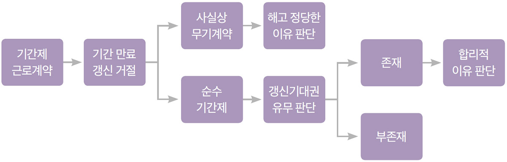

기간제 근로계약은 근로계약 기간의 만료로 인해 근로관계가 자동으로 종료되는 것이 원칙이고, 근로계약의 기간 만료 시 사용자가 계약의 갱신을 거절하는 것은 해고가 아니기에 근로계약 갱신 거절을 위해 근로기준법 제23조 제1항의 ‘정당한 이유’가 요구되는 것은 아니다. 다만 기간제 근로자의 고용안정 보호를 위해 법원은 기간제 근로자에게 계약 갱신에 대한 정당한 기대권(이하 갱신기대권)이 인정되는 경우 사용자는 계약 갱신 거절에 ‘합리적 이유’가 있는 경우에만 계약 갱신을 거절할 수 있다는 입장을 밝히고 있다.
기간제 근로자의 갱신기대권의 성립 요건
기간제 근로자란 ‘기간의 정함이 있는 근로계약’, 즉 계약 기간을 정한 근로계약을 체결한 근로자를 의미한다. 법률상 용어인 ‘기간제 근로자’라는 용어를 사용하지 않고 ‘계약직’, ‘임시직’, ‘촉탁직’ 등의 용어를 사용하더라도 근로계약 체결 시 계약 기간을 정했다면 해당 근로자는 기간제 및 단시간 근로자 보호 등에 관한 법률(이하 ‘기간제법’이라 함)이 정하고 있는 기간제 근로자에 해당한다.
법원은 ① 근로계약, 취업규칙, 단체협약 등에서 근'로계약 기간의 만료에도 불구하고 일정한 요건이 충족되면 해당 근로계약이 갱신된다는 취지의 규정을 두고 있거나, ② 그러한 규정이 없더라도 근로계약의 내용이나 근로계약 체결의 동기 및 경위, 계약 갱신의 기준 등 갱신에 관한 요건이나 절차의 설정 여부 및 그 실태, 근로자가 수행하는 업무의 내용 등 당해 근로관계를 둘러싼 여러 사정을 종합하여 볼 때 근로계약 당사자 사이에 일정한 요건이 충족되면 근로계약이 갱신된다는 신뢰 관계가 형성되어 있는 경우 근로자에게 갱신기대권이 인정된다는 입장(대법원 2011. 4. 11. 선고 2007두1729 판결 등)이다.
즉 법원은 근로관계 당사자 사이의 계약 갱신에 대한 ‘합의(근거 규정)’ 또는 ‘신뢰 관계’를 갱신기대권의 근거로 판단하고 있는바, 법원이 제시하고 있는 갱신기대권의 성립 요건과 갱신기대권 성립 시 사용자가 계약 갱신을 거절할 수 있는 ‘합리적 이유’에 대한 법리를 살펴보도록 한다.
(근로계약 등에) 갱신 근거 규정을 둔 경우
근로계약·취업규칙·단체협약 등에서 일정한 요건이 충족되면 해당 근로계약이 갱신된다는 취지의 규정을 두고 있다면 그 자체로 갱신기대권이 인정될 수 있다. 이때 근로계약·취업규칙·단체협약 등에 갱신 근거 규정을 두고 있다는 의미는 단순히 인사고과 등을 참작하여 해당 근로자와 재계약을 할 수 있다는 정도로는 부족하고 재계약을 위한 요건이나 절차를 구체적으로 규정하고 있는 등 일정 요건을 충족하면 재계약을 하겠다는 ‘의무규정’으로 해석될 수 있어야 한다.
갱신 근거 규정을 두지 않은 경우
근로계약·취업규칙·단체협약 등에 갱신 근거 규정이 없다면 해당 근로관계를 둘러싼 여러 사정을 종합적으로 고려하여 근로계약 당사자 사이에 일정한 요건이 충족되면 근로계약이 갱신된다는 신뢰 관계가 형성될 수 있는지 여부를 판단해야 한다.
(1) 갱신의무 또는 갱신 절차 규정 등의 존재 여부
법원은 갱신기대권 인정에 있어 근로계약이나 취업규칙 등에서 계약 갱신 의무나 갱신 절차 내지 요건에 관한 근거 규정이 존재하는지 여부를 중요한 기준으로 판단하고 있다. 따라서 단순히 재계약이 가능하다는 취지의 규정만이 있다거나 내부결재문서 또는 그와 같은 취지의 언행이 있었다는 사실만으로는 갱신기대권이 인정될 가능성이 높다고 단정하기는 어렵다.
(2) 상시·계속적인 사업(업무)
사업(업무)의 성격이 상시적·계속적인 경우 갱신기대권 인정의 적극적 요건이 되나 업무가 상시적·계속적인 경우에도 기간제 근로자를 고용할지 여부에 관한 사용자의 재량을 존중하여 갱신기대권을 인정하지 않을 수 있고, 회사의 사정 또는 업무의 성격상 인력 운영이 탄력적으로 이루어져야 하는 경우에도 갱신기대권이 인정되기 어려울 수 있다.
(3) 평가 등의 존재
근무 실적을 평가하여 일정 수준 이상이면 재계약하도록 규정한 경우 갱신기대권이 인정될 것이나 근무 실적 평가 규정이 있다고 하더라도 그것이 단순히 근로자의 충실한 업무 수행을 담보하고 재계약 여부의 판단 자료로 활용하기 위한 정도라면 이를 재계약 의무나 계약 갱신의 요건 내지 절차를 정한 것으로 보기는 어렵다.
다만 이러한 경우에도 재계약 관행, 사업·업무의 계속성 등이 인정되고 일정 수준 이상의 평가 점수를 받으면 계약이 갱신된다는 신뢰 관계가 형성된다면 갱신기대권이 인정될 수 있다.
(4) 관행의 존재
사업장 내 동종 또는 유사한 업무를 수행하는 기간제 근로자의 계약 갱신에 관한 관행이 성립된 경우 갱신기대권이 인정될 수 있다. 다만 다수의 동종 근로자를 재고용한 사실이 있다고 하더라도 근로계약이 종료된 후 퇴사한 근로자가 있거나 근로계약 갱신이 거절된 근로자가 있는 경우 갱신기대권 인정에 부정적인 요소로 작용할 수 있다.
(5) 기타
법원은 계약 기간을 1년으로 정하여 근로계약을 체결한 이후 매년 계약을 갱신해오다가 최종적으로 재계약을 하면서 계약 기간이 만료되면 당연 퇴직하는 것으로 정하여 더 이상의 재계약이 불가능함을 분명히 한 경우 갱신기대권이 인정되지 않는다고 판단한 바 있다.
계약 갱신 거절에 대한 합리적 이유
기간제 근로자에게 갱신기대권이 인정될 경우 사용자가 계약 갱신을 거절하기 위해서는 사회통념상 상당하다고 인정되는 ‘합리적인 사유’가 있어야 한다. 여기서 ‘합리적인 사유’란 ‘정당한 이유1)’라는 해고 제한의 기준보다는 완화된 기준이므로 그 유효성은 해고보다는 넓게 인정될 수 있다.
구체적으로 사용자가 근무 평정을 하여 근로자의 직무 수행 능력 부족 등을 증명하고 계약 갱신에 합리적 이유가 있다고 주장하는 경우가 많은데, 평가가 객관성·합리성·공정성이 있다면 평가 결과를 근거로 한 계약 갱신 거절에 합리적 이유가 있다고 인정될 수 있으나, 평가에 객관성·합리성·공정성이 결여되었다면 갱신 거절에 합리적 이유가 없다고 판단될 수 있다.
또한 법원은 회사가 경영상 어려움에 처하여 인력을 축소해야 하는 사정이 있거나 사업의 성격상 인력을 탄력적으로 조절할 필요성이 있는 경우, 기간제 근로자를 고용한 계기가 없어진 경우 등의 사례에서 계약 갱신 거절의 합리적 이유가 있다고 판단한 바 있다.
[그림 1] 기간제 근로계약의 판단 순서 흐름도2)

무기계약 전환기대권
법원은 계약갱신기대권과 구별하여 무기계약 전환기대권도 인정하고 있는데, 근로계약 등에서 계약기간이 만료될 무렵 일정한 요건이 충족되면 무기계약 근로자로 전환된다는 취지의 규정을 두고 있거나, 당해 근로관계를 둘러싼 여러 사정을 고려하여 근로계약 당사자 사이에 일정한 요건이 충족되면 무기계약으로 전환된다는 신뢰 관계가 형성되어 있는 경우 무기계약 전환 기대권이 인정될 수 있다.
앞서 살펴본 바와 같이 기간제 근로자의 사용 및 근로계약 갱신 여부는 원칙적으로 사용자가 재량적으로 정할 수 있으나, 갱신기대권이 인정되는 경우 사용자는 계약 갱신 거절의 ‘합리적인 이유’가 있는 경우에 한하여 계약 갱신을 거부할 수 있다. 따라서 각 사업장은 기간제 근로자를 고용함에 있어 갱신기대권 인정 가능성을 면밀히 검토한 뒤 기간제 근로자에 대한 계약 갱신 거절 가능 여부를 판단하는 것이 바람직할 것이다.
1)
근로기준법 제23조 ① 사용자는 근로자에게 정당한 이유 없이 해고, 휴직, 정직, 전직, 감봉, 그 밖의 징벌(懲罰)(이하 “부당해고 등”이라 한다)을 하지 못한다.